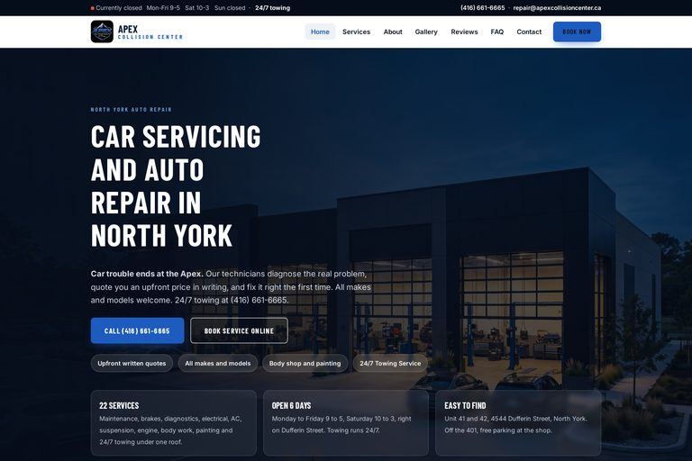

Apex Collision Center
Auto repair and collision shop website for a North York garage, generated by a custom Python build

Overview
Apex Collision Center is a car servicing, auto repair and collision shop at 4544 Dufferin Street in North York. I built its website at apexcollisioncenter.ca so that someone searching for a mechanic, brake job or tow nearby finds the shop, understands what it does, and calls or books.
What the Site Does
- Home page with services, hours (Monday to Friday 9 to 5, Saturday 10 to 3) and the 24/7 towing line
- 22 service descriptions (brakes, oil changes, diagnostics, AC, engine, body work, painting, towing)
- Service-area pages for North York, Toronto, Downtown, Scarborough and Mississauga drivers
- About, gallery, reviews, FAQ and contact pages with click-to-call and directions
- A symptom-to-repair guide and a seasonal maintenance guide for Ontario drivers
- A booking form (see What Is Next: its form endpoint still needs connecting)
How I Built It
Instead of hand-writing 38 pages, I wrote a small static site generator in Python. build.py reads the shop's data (address, hours, services, testimonials, FAQs and service areas) from Python data modules and renders every page from shared templates, so one change to the hours or a service updates every page at once. A separate SEO module builds the structured data, robots.txt, llms.txt and the web manifest. The repository has 20 commits, starting 2026-10-07.
site_data.py: the single source of truth for name, address, hours, services and FAQsarea_extras.pyand service extras: per-area and per-service copyseo_upgrade.py: JSON-LD graphs, robots.txt, llms.txt and the web manifest- Output: plain HTML, CSS and images, with no runtime framework
Hosting and Delivery
The site is static and hosted on GitHub Pages with the client's custom domain. Cloudflare sits in front as the DNS provider and proxy (TLS, caching and DDoS protection on the free plan), and GitHub's Fastly CDN serves the files from its Toronto edge. Every push to the main branch redeploys the site through a GitHub Actions workflow.
Domain Email
Mail for the domain is set up in DNS. Incoming mail is handled by Cloudflare Email Routing (MX records on route1-3.mx.cloudflare.net) and forwarded to a real inbox. Outgoing mail goes through the Brevo SMTP relay and is signed with DKIM (the brevo1 and brevo2 keys), with an SPF record and a DMARC policy that sends aggregate reports, so messages from the domain authenticate and land in inboxes instead of spam.
Search and AI Discoverability
Every page carries schema.org structured data: the home page alone declares 23 services with offers, a 16-question FAQ and the cities served, so search engines and AI assistants can answer questions like "does Apex do towing" directly. The sitemap lists 38 URLs, and an llms.txt file gives AI systems a plain-text summary of the shop.
How a Visit Works
- A driver searches for a mechanic or tow in North York and lands on a service or area page
- The page answers the question (what it costs, how long, whether they do it) above the fold
- One tap calls (416) 661-6665 or opens directions to the shop
- Alternatively, the visitor fills in the booking form
What Is Next
- Connect the booking form: it currently posts to a Formspree placeholder (REPLACE_WITH_FORM_ID), so submissions are not delivered yet
- Tighten the DMARC policy from monitoring (p=none) to quarantine once reports show only legitimate mail
- Add before-and-after photos to the gallery as the shop supplies them
Frequently Asked Questions
What is the Apex Collision Center website built with?
A custom Python static site generator that renders 38 HTML pages from one data file, published on GitHub Pages behind Cloudflare.
How does email work for apexcollisioncenter.ca?
Incoming mail uses Cloudflare Email Routing; outgoing mail goes through the Brevo SMTP relay, signed with DKIM and covered by SPF and DMARC.
Why generate the pages instead of writing them by hand?
Hours, services and contact details appear on every page; generating them from one source means a change is made once and stays consistent everywhere.